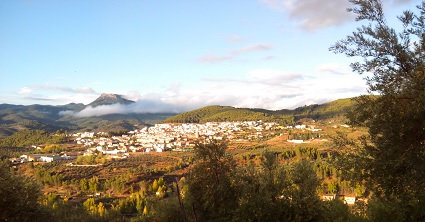

Siles (Jaén)
Siles es un municipio español de la provincia de Jaén, en la comunidad autónoma de Andalucía, perteneciente a
la comarca de la Sierra de Segura, limítrofe con la provincia de Albacete. Tiene una población de 2.451 habitantes según el último censo disponible del (INE 2011).
Gran parte de su término municipal se encuentra dentro del Parque Natural de la Sierra de Cazorla, Segura y Las Villas. Debido a su enclave se trata de un municipio mayoritariamente forestal cercano a ríos,
concentrándose las tierras de cultivo, fundamentalmente olivar, en una franja de dirección suroeste-nordeste que incluye las proximidades del núcleo urbano y el enclave municipal que posee el municipio al noroeste de la comarca.
